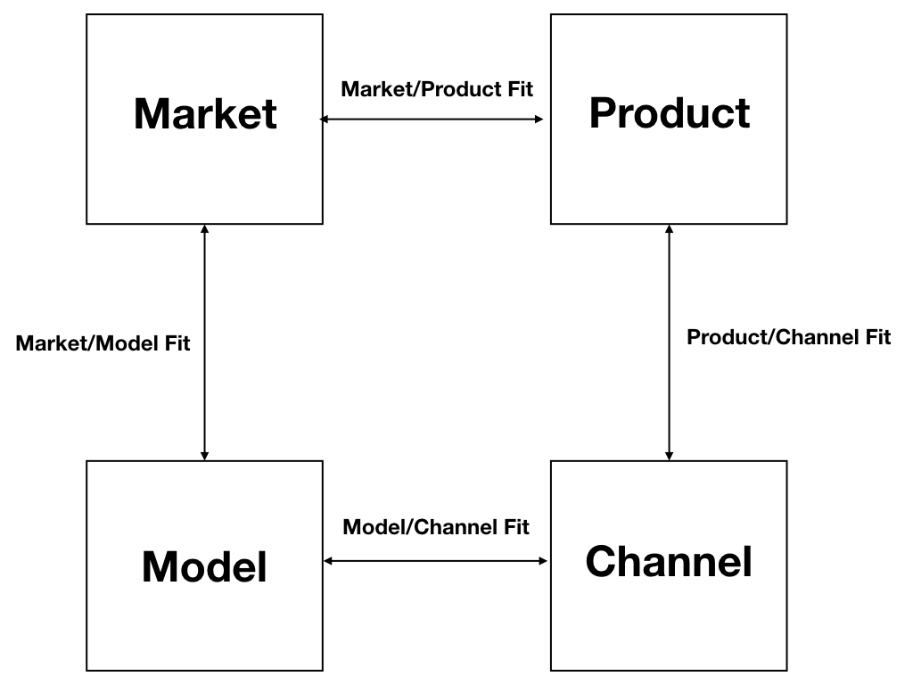

What we do
Digital Product Development
We deliver a fast and succesful introduction of innovative internet concepts. Our ecosystem of highly experienced entrepreneur, internet developers and growth hackers will help you to get Product Market Fit, traction and growth.
Startup Creation
From zero to Silicon Valley. If you have an idea to pivot or problem to solve, we can accompany you in every step of the way. And help build the startup together.
Startup Acceleration
We are experienced entrepreneurs and if we believe in a concept we are willing to put our money where our mouth is. We offer support for business development, building the Minimal Viable Product, growth hacking, getting traction and building an organisation that can execute the Build-Measure-Learn cycle.
Startup Validation
For potential investors in startups we offer a service where we validate the Startup. Is the startup scalable? Is the business model viable? What is the network effect? We validate the team and the concept. The man and the plan. Potential investors can have a basic idea of the maturity of the startup and the likelyhood of succes.
Startup as a Service (SaaS)
A lot of companies want to incorporate the Startup culture in their organisations. We help them to think like a startup and work as a startup. How to use the Build, Measure, Learn cycle to your advantage.
How we work
We have several steps we use to get from an idea to a valided product. These are best practices validated at the startups we have done in the past. Succesful startups not only have a Product/Market Fit but also focus on a fit with the Channel and achieving network effects.

Business Model Canvas
We transform the idea or concept to a business model by bringing al aspects into focus. This gives a good insight of all the aspects that play a role in the startup and the chance of success.
You can view the Business Model Canvas. It is just an A4 that needs to be filled out, no big business plans!
Business Value Proposition
An important part of the Business Model Canvas is the Business Value Proposition. The questions that should be answered are: what are the pains and gains that will be solved by this solution. How does our product add value to its stakeholders (the customer).
Lean Startup Cycle
We make use of the Lean Startup Cycle to get as fast as possible to a product market fit and customer. The cyscle consist of 3 steps: Build, Measure and Learn. It's goal is to test the uncerainties that are part of the business model.
By testing a minimal viable product on customers you can learn from their behavior and adapt your product to the needs of the customers.
The most important thing to do is to define the uncertainties and asumptions you want to test and make a minimal viable product that can give answers to those uncertainties. You can measure the beavior and learn from it.
After a few cycles you should be getting closer to a product that fulfills the needs of the customers. The minimal viable product is a minimal version of the product. You can use minimal resources since you do not know what the outcome of
the test is going to be.